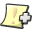

| Create a new Reminder |
How to create a new Reminder Walkthrough (or How to reach fulfillment in seven easy steps)
The following is a walkthrough of how to create a new Reminder.
- Click on  Add Reminder
- Type the Reminder Title "Go to Work".

- Click in the Reminder Message area, and type "It is time to go to work"
- Click Remind me at: and use the Up/Down buttons to set the time to 06:30 AM
- Check the Play Sound box and select the sound Sosumi to play 6 times.
- Check the Repeat Reminder box.
(This indicates that the Reminder will repeat every day at 06:30 AM.)
- Check the Save Reminder box. Then click OK.
(This indicates that the Reminder will be saved every time EggTimer is quit.)